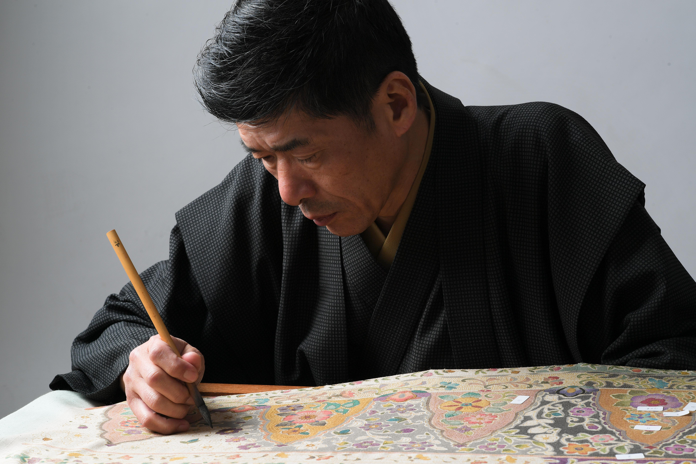

人には、それぞれに
美しき心の想い色がある。
色に恋して、
色を愛して、
美しき色を染め上げる。
美しき心の想い色がある。
色に恋して、
色を愛して、
美しき色を染め上げる。
栗岡 泉
IZUMI KURIOKA
Philosophy
伝統に恋し、
伝統に恋し、
革新を染める
日本大学芸術学部美術学科在学中の
友禅染の図案制作をきっかけにこの世界に入る。
大学卒業後、元・新匠工芸会 染色家 岩田福次郎氏に師事。
後、(株)岡重 創業制作部責任者を経て常務取締役となり、友禅染の技術を生かした斬新なデザインで、ハンドバッグやスカーフ・ショール等を商品化。
伝統美と独自の革新を融合させた作品作りを続けています。


Biography
経歴・受賞歴
-
1956年兵庫県生れ
-
師事元・武庫川女子大学教授 示現会 花畑和夫氏に師事
日展会友 光風会 坂手得二氏に師事 -
経歴日本大学芸術学部美術学科在学中の友禅染の図案制作をきっかけにこの世界に入る。
大学卒業後、元・新匠工芸会 染色家 岩田福次郎氏に師事。
後、(株)岡重 創業制作部責任者を経て常務取締役。
友禅染の技術を生かした斬新なデザインで、ハンドバッグやスカーフ・ショール等を商品化。 -
現在「京染泉六」主宰、
京都手描友禅協同組合組合員、
京都商工会議所染織部会員 -
評価・紹介ファッション京都推進協議会にて、
「幾何学的な美しさが魅力の更紗を描き続ける創作染色家の一人・京都商工会議所の事業である KYOTO PREMIUM にも参画するなど、その高い技術を活かした新しい商品開発にも余念がない」として紹介される。 -
1995〜2010年日本染色作家協会理事長 5代田畑喜八監修の元、
祇園甲部「都をどり」の総をどり衣装制作に携わる。 -
2004年京都商工会議所 「Kyoto Style Cafe」
東京/青山 スパイラルホール
〜染・織・繍の新たな提案「トラディショナル＆モダン」〜参加 -
2006年京都商工会議所 会報誌「技に生きる」
11月・12月号にて紹介掲載
NHK番組 『美の壺』にて制作風景放映 -
2012年テレビ東京 ドラマ水曜ミステリー9「作家探偵・山村美紗シリーズ」
主演 浅野ゆう子 衣装監修 着用衣装制作 -
2013年フジテレビ ドラマ 「鴨、京都へ行く。」-老舗旅館の女将日記-
主演 松下奈緒着用衣装制作 -
2014年第六十二回伊勢神宮式年遷宮
記念奉納・五穀豊穣纈纈文様卓飾 -
2015年芸術祭参加 南座特別公演衣装制作
伝統的工芸品 京友禅・京小紋に係る審査員認定
伝統的工芸品検査指定工場登録